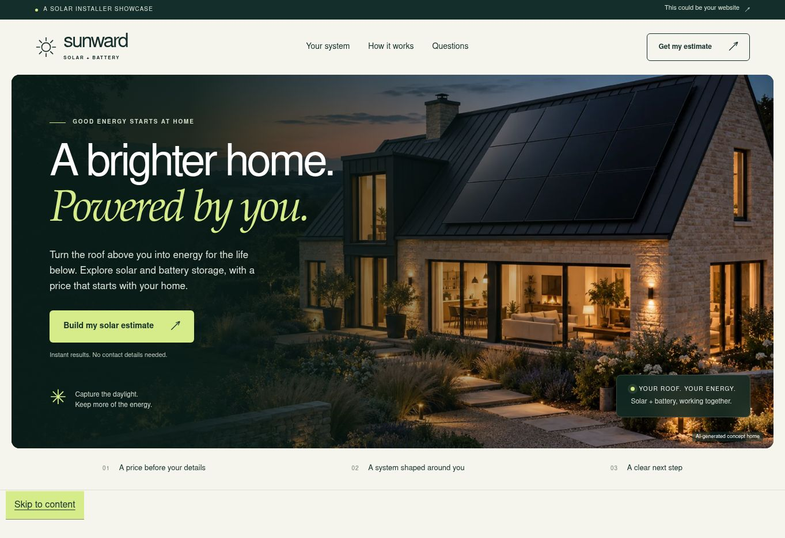

INDEPENDENT THINKING. PRACTICAL MARKETING.
Good businesses
deserve better
marketing.
You’ve built something worth finding.
We help people see it, choose it and take the next step.
Make it clear.✳Make it useful.✳Make it feel like you.✳Make the next step easy.
THE OPPORTUNITY
Your business has a story.
Let’s give it a stronger presence.
A dated website, an incomplete Google profile or a quiet social page can make a good business easy to overlook. We bring those pieces together, so customers can understand what you offer and know exactly what to do next.
Explore how we can help ↗SELECTED WORK & CONCEPTS
Less telling.
More showing.
Explore the websites and ideas.
See the thinking behind each one.
01 / 79 BEACH BAR & RESTAURANT
A little sand.
A lot of possibility.
A beachfront restaurant with plenty of character. A proposed website, a brighter Facebook identity and a practical local-search plan bring that character online.
Website designSocial identityGoogle profile audit
Explore the project ↗Complimentary proposal · Awaiting owner approval.
Design work shown; no performance results claimed.
↗SUNWARD / DEMONSTRATION
A more useful
solar website.
A solar installer showcase with an interactive estimate calculator and a clear survey-enquiry journey. A demonstration of what a more engaging landing page can do.
Landing pageInteractive calculatorEnquiry journey
Explore the solar demo ↗Illustrative brand and estimates. Not a customer endorsement or a promise of savings.WHAT WE DO
A better presence.
A clearer path
to new business.
Start with the piece that needs attention. Build from there.
Find your starting point ↗01Websites that earn their place.
+
Clear, distinctive websites that work on a phone, explain your offer and make enquiries or booking requests straightforward.
- Website design and copy
- Landing pages and interactive tools
- Mobile usability and clear calls to action
02Local search that helps people find you.
+
Make your business information accurate, useful and consistent when someone is looking nearby.
- Google Business Profile audits and authorised updates
- Website content and technical SEO essentials
- Menus, directions and honest review journeys
03Social content with a sense of you.
+
Give your pages a coherent identity and a practical plan built around the real business.
- Profile and cover design
- Reusable content templates and copy
- Photography direction and content planning
04Campaigns with a clear purpose.
+
Connect the right message, landing page and enquiry journey. Agree the budget and measurement before spending.
- Google and Meta campaign planning
- Landing-page testing
- Enquiry-source tracking and practical reporting
Advertising spend and third-party services are agreed separately. Results depend on the offer, competition, budget and customer experience.
HOW WE WORK
Understand first.
Then make it better.
Clear scope. Direct conversations.
Work you can see before launch.
01 / LOOKFind the gaps.
We look at your website, search presence and customer journey. What’s working? What’s making it harder to choose you?
02 / MAKEShow the possibilities.
We turn the priorities into a practical proposal, with designs, deliverables and costs you can review.
03 / LAUNCHPut it to work.
Approve the details, connect the right systems and launch. Keep ownership of your domain and business accounts.
04 / LEARNFollow what matters.
Review useful signals: enquiries, booking requests and customer feedback. Improve the parts that need attention.
GREEN ISLE MARKETING
Good thinking.
Personal attention.
No unnecessary noise.
For businesses that care about what they do—and want their marketing to show it.
We bring design, copy and practical marketing together. From restaurants and hospitality to installers and service businesses, the aim is the same: help the right people understand your offer and get in touch.
Our work starts with a conversation about your business, your customers and what would make a real difference.
↗Douglas, Isle of ManWorking collaboratively, wherever the project takes us.
A FEW GOOD QUESTIONS
Can you improve what we already have?+
Yes. We start by reviewing the current website and marketing. Sometimes a focused improvement is the right answer; sometimes a rebuild makes more sense.
How much does a project cost?+
We quote after understanding the scope. Your proposal sets out the deliverables, agency fee and any separate hosting, advertising or software costs before work is agreed.
Do we keep control of our accounts?+
Yes. Your business should retain ownership of its domain, hosting, advertising and social accounts. Access for agreed work can be granted separately.
Can a website include online bookings?+
Yes. We can plan an integration with a suitable booking provider. Live availability and automatic confirmation need the provider, capacity rules and notification process to be configured. A request form alone is not a live booking system.
Can we see an example before committing?+
Explore the portfolio above to see working concepts and their scope. We’ll agree whether a tailored concept is part of your proposal.